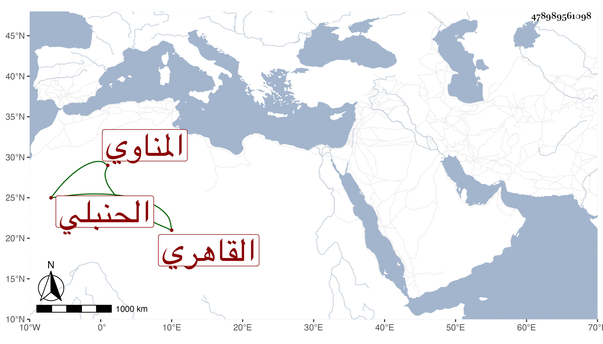

0902Sakhawi.DawLamic.ITO20230111-ara1.EIS1600.478989561098
Biography ID: 478989561098
1041
علي بن محمد بن عبد الله نور الدين المناوي ثم القاهري الحنبلي ويعرف بباهو . مات في صفر سنة ثمان وثمانين عن بضع وستين وأسند وصيته للشهاب الششيني الحنبلي وكان ساكنا خيرا عاقلا يتجر في السكر وغيره وينتمي لبني الجيعان وباسمه أطلاب ووظائف منها التصوف بالأشرفية ، حج وباشر عقود الأنكحة مع المحافظة على الجماعة وطيب الكلام رحمه الله وله ولد ذكر تركه صغيرا فحفظ وصية الخرقي وعرضه على بعد ثمان سنين .
